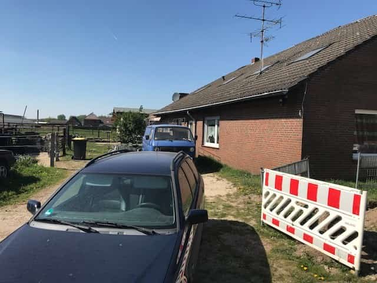
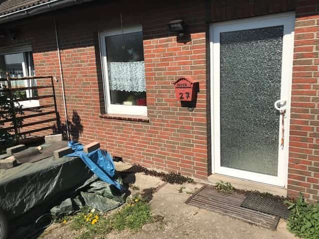
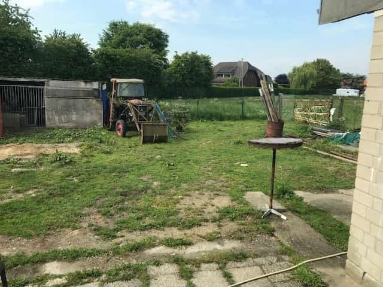
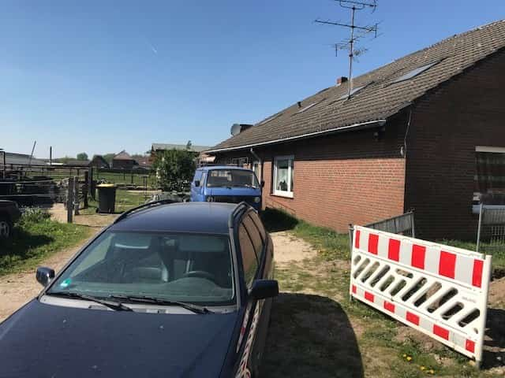
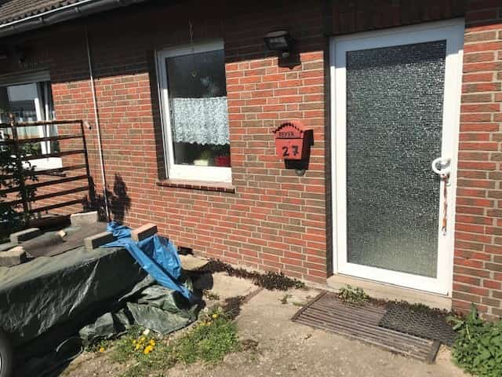
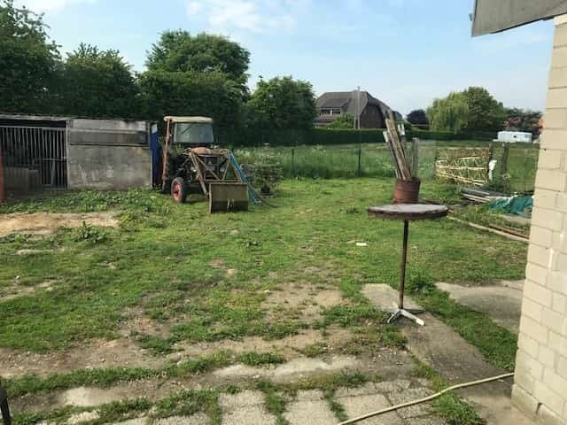

 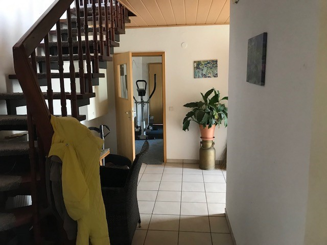
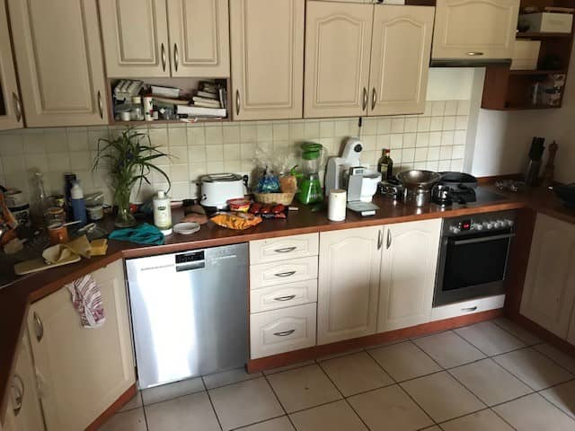
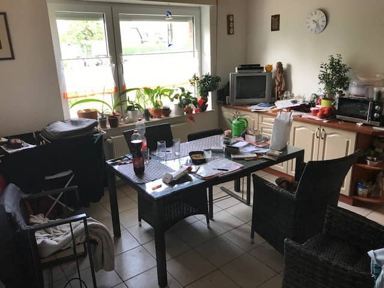
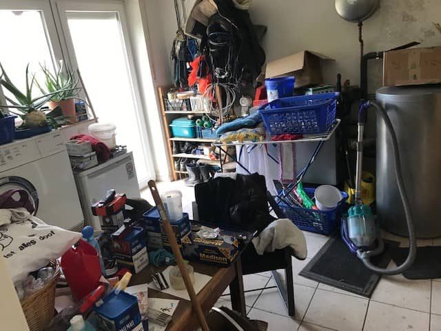
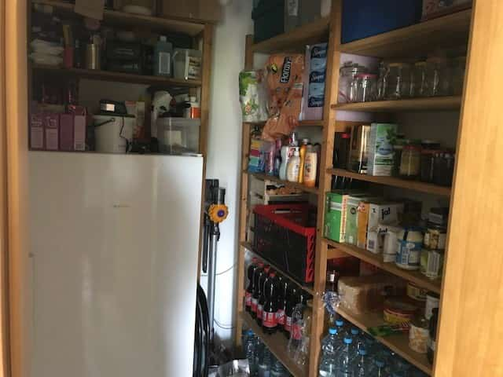
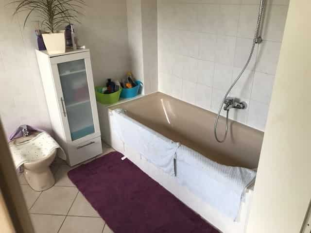
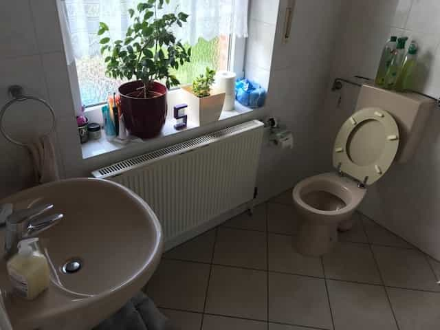
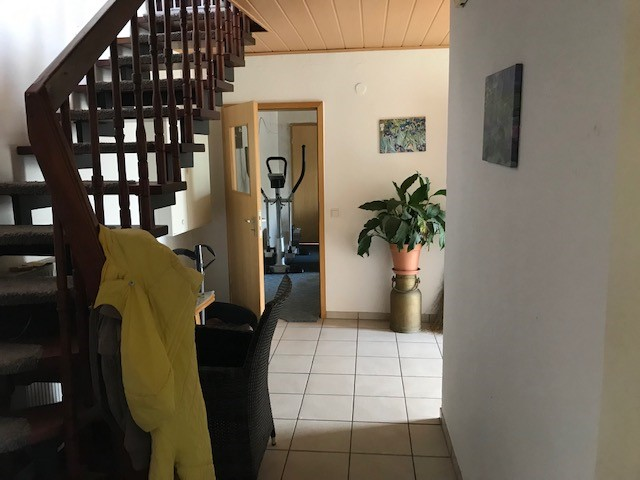
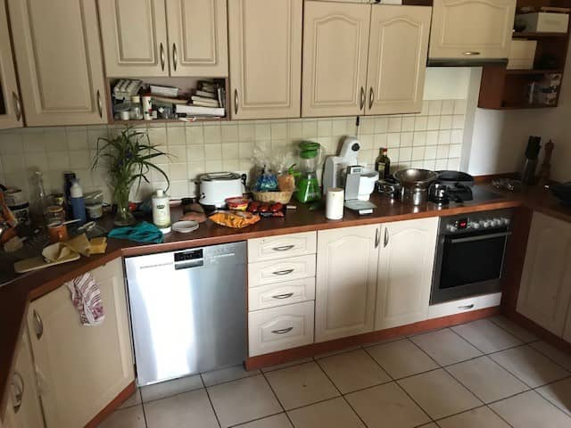
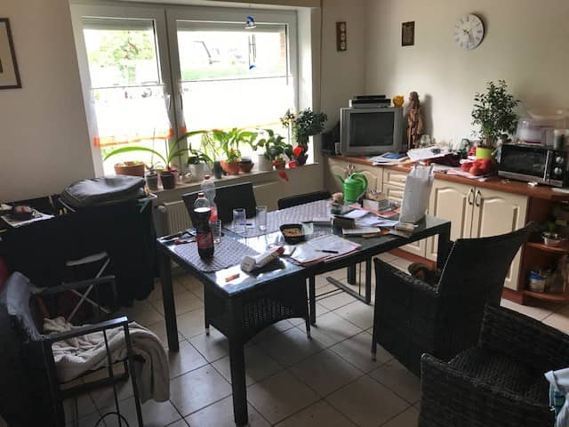
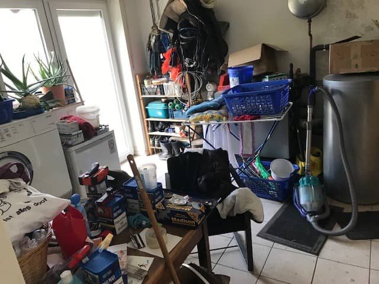
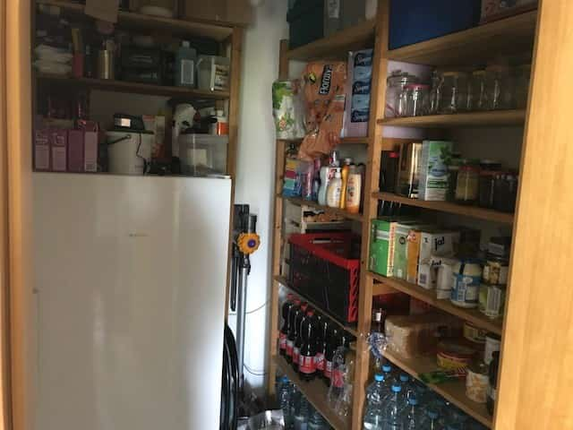
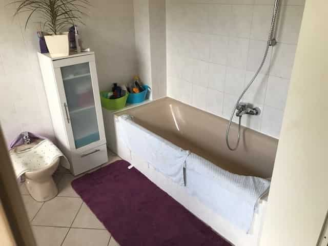
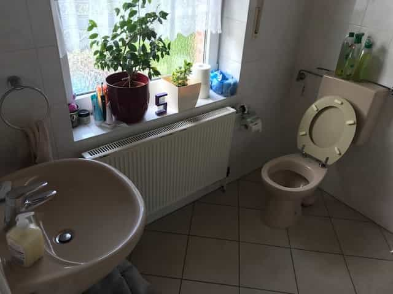


 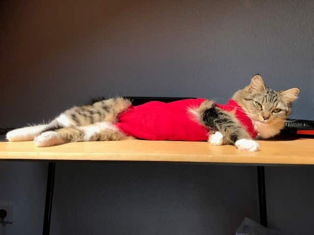
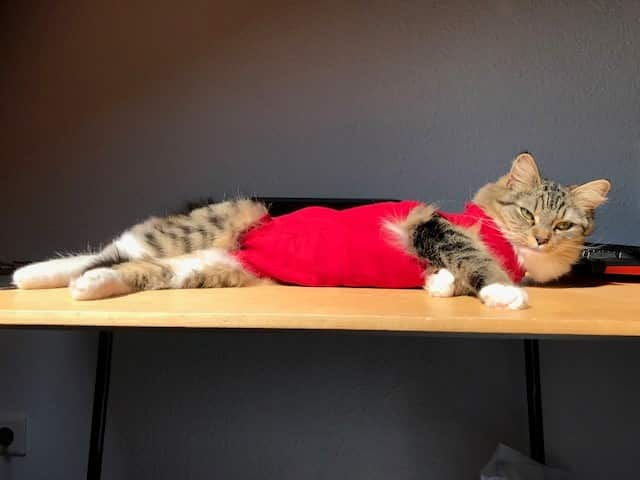


06. maj. - 12. maj.
(Ord: 691)
På en eller anden måde, er oddsene imod os.
Vi havde nogle statikere henne og tjekke hvordan og hvor grænserne ligger. Og ... De havde alle forskellige meninger.
Jeg er ikke 100% sikker på hvad det lige er der sker - men det finder vi nok ud af i næste uge; huset står endnu!
Der er egentlig ikke så mange nyheder fra denne uge. Det hele er lidt langtrukken.
I lørdags tog vi til Holland på Anita arbejde; der var Open House, så medarbejderne blev inviteret til at tage familie og venner med til at se hvad det er for noget.
Så der tog vi ud sammen med Fabien(Jessy's halvbror som nogle gange kommer og arbejder for Anita) lørdag morgen ved 9 tiden - og jeg fik fortalt at der var morgenmad derhenne, så jeg undlod at spise morgenmad ... Det viste sig så at de med "morgenmad" mente all inclusive på så meget kage, chips, snacks og sodavand som dit tarmsystem kan holde til..
Så jeg fik alstå som sagt kage, chips og sodavand til morgenmad. Altså, det smagte helt fantastisk jeg klager ikke; jeg siger bare at det, ikke lige var hvad jeg havde forventet.
Efter morgenmaden gik vi nedenunder i "hallen" for at kigge lidt rundt der - som i kan se på billedet, er det gigantisk; og det der er kun én hal ud at fire. Der er simpelthen fire lige store haller bare i det område.
*Billederne er nogle som jeg har fundet på internettet -- vi måtte ikke tage billeder der inde, da der var mange forholdsregler for hvordan det hele skulle forløbe pga. sikkerhed. Men det er det samme område*
Nogle af hallerne i baggrunden er fra nogle andre kunder; Anita arbejder for kunden New Balance, og det er i fire af de haller.
New balance har også rigtig mange nye varer som sko, jakker, sportstøj etc. derinde, så der var meget sikkerhed omkring at der ikke blev taget noget med ud eller at der blev fotograferet. Anita fortalte også en masse historier om folk som troede de lige kunne snuppe et par ting med hjem fra arbejde og blev taget i det.
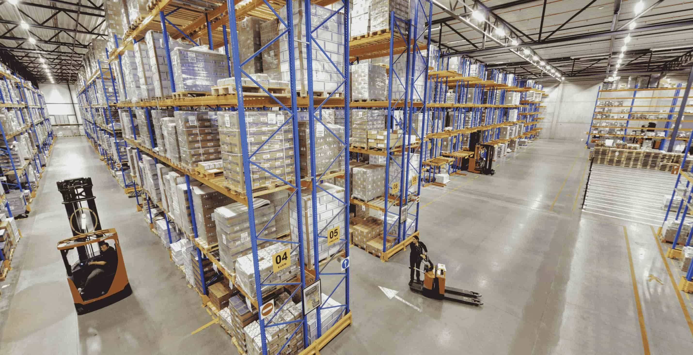 Hallen var lidt for stor for Anita og Edeltraut til at kunne klare at gå hele ruten igennem; så de gik itlbage ovenpå og snakkede med andre medarbejdere imens Fabien og jeg spadserede igennem hallen.
Der var en masse små sjove aktiviter på vejen. De fleste var ment for børn, men der var en labyrint som simpelthen var bygget op af store flyttekasser; den var meget sjov at gå igennem.
Da vi var kommet ovenpå igen (og havde fået lidt mere kage) gik vi ud i teltet udenfor, hvor der var BBQ og masser af grill-mad med salat til -- igen, alt hvad man kan proppe i sig.
Efter noget godt pastasalat og nogle tøre kedelige hamburgere med bogstaveligt talt "firkantede" bøffer, fik vi is og karamel kiks. Igen-igen, LIGE så meget is som man kunne tåle. Det var som at være i himmelen. Tænk engang, hvilken medarbejder-bonus Anita får: IS!!
Så nuppede vi et par poser chips i lommerne og tog hjem kort efter middag, hvor Fabien så havde noget arbejde derhjemme.
Søndag var morsdag .. Jeg var ved blomsterhandleren i fredags før bordtennis, og fandt en lille buket som jeg gav Anita - senere kom Kurti (Anitas bror) også med nogle blomster. Han skulle hjælpe med noget med nogle gamle billeder at huset. Anitas anden bror skulle egentlig også være kommet, men han havde desværre weekend-vagten på jobbet.
Senere spiste vi kage.. Anita og Edeltraut havde hver bagt en kage dagen før; de smakte mega godt, men jeg holdte mig lidt tilbage, fordi du aner ikke hvor mange måske kilo kage jeg har spist her i weekend..
Det kan være at jeg løber i skole på mandag for at forbrænde lidt af kagen. ;)
Fun fact: Edeltrauts kage forstiller et muldvarpeskud.. Altså, med chokolade som jord oven på og vulkanformet - jeg ville have taget et billede, men vi spiste den. ;D
Ugens vejrudsigt:
Regn.
Næste uge dog:
Der får vi sol - og i hvert fald 15+ grader.
29. april - 05. maj.
(Ord: 565)
I de sidste par uger har vi haft denne situation hvor naboen rev sin del af huset ned, ja i kender historien.
Men nu har jeg fået uddybende info om hvad der sker/kan ske, fordi naboen inde ved siden af har efter sigene flyttet på vores grundsten for at snyde/bevise over for os at det er OS der har bygget 20 cm hen på hans grund, mens det i virkeligheden er omvendt. Vores hus(del) er bygget 20 cm længere henne på vores grund, så vand kan løbe i mellem og komme væk, så vi undgår vandskader.
Dette har så ledt til at vi skal have nogle statikere som kommer og måler hvad der tilhører hvem, og hvis det er som det ser ud til,(hvor han har flyttet grundstenen) risikere vores nabo en fængelsstraf på op til 5 år.
Men det vil ikke hjælpe os på nogen måde, fordi lige nu står vores (beskadiget) ydre husmur frit ude i det åbne(som naboen er nød til at betale for at reparere); selvom den egentlig blev bygget til at stå og "støtte" sig op af et andet hus. Plus, så er der også hullerne direkte ind i huset, som også skaber store problemer for os, fordi nu kommer der gennemtræk i hele huset hvis ikke alle døre er lukket; derfor temperaturen i huset også faldet bemærkelsesværdigt.
Og det er her jeg kommer ind i billedet, fordi jeg skal muligvis vidne i sagen; jeg er nemlig flere gange vågnet om natten ved at jeg har fået en kold vind direkte ned i hovedet, og dette er vigtigt for at vi kan bevise at hvad han gjorde påvirker vores leveforhold.
Specielt i sidste og denn uge, hvor det har været specielt koldt vejr for maj; med regn næsten hver dag og et par dage med hagl; derfor er radiatorene også røget tilbage på fuld skrue.
Tænk engang, alt det her... bare fordi naboen ville have 20 sølle centimeters mere hus.
Men nu må vi lige vente og se hvad der sker, det' lidt spændende.
I onsdags var det Maifeiertag, så jeg havde fri fra skole. Altså, jeg går ud fra at det er lidt ligesom Arbejdernes internationale kampdag. Ikke at jeg ved meget om det, men det var fridag, mere er der nok ikke at sige om det.
Hendrik fra min klasse, havde fødselsdag den 1. maj, og han holdte fødselsdagsfest i fredags sammen med en pige som også fyldte 16 på cirka samme tidspunkt.
Der var jeg så ovre fredagaften. Det var henne ved hende pigen, hun bor 2 km væk på en stor gård med stor hus og have. Vi blev omkring 30 mennesker til festen.
Og hvis du spørger mig. Så var aftenes højdepunkt da der blev grillet Bratwurst. Fordi det er Tyskland.. Så selvfølgelig er der Bratwurst.
Men det var mega koldt, så det var faktisk ret ubehageligt. Selv med jakke på og det hele var det koldt. Derfor lavede vi bål lidt hen på aftenen, meeeen så begyndte det selvfølgelig at regne. Så tog jeg hjem lidt tidligt kl. halv 12, fordi jeg magtede ikke være der udenfor i regnen til kl. 01.
Men det var hvis alt det blev til for denne uge. Nu er der officielt under to måneder til jeg skal rejse hjem til Danmark igen, så det er med at få så meget ud af de næste par uger som muligt.